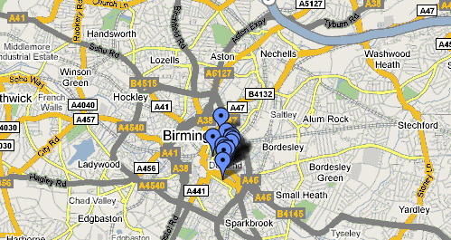

There is a bit of a debate about Created in Birmingham going on over at Dave Harte’s blog. It has been suggested that CiB has lost a bit of ‘umpf’ of late, that it may have strayed from it’s original purpose, or is lacking that special something that made it what it was. I am keen to get some of the regular readers in on the debate. I would be really interested to hear your feedback, warts and all.

In light of this, I wanted to let you know some things I am working on at the moment. I’m going to be changing the aesthetic of the blog, and changing the template we use. I’ll be using a free, downloadable template just as Pete did when he first created CiB. I will be doing this for several reasons, one simply because I am not a technical person and wouldn’t have a clue how to design or adapt my own, but mostly because I want to encourage others to start blogs by using these free tools that are available to anyone.
I am also working on a great big CiB Google Map of Birmingham. As a reader of CiB one question has always stuck with me: “That gallery / project / meetup / exhibition looks great, but where the hell is it?” When putting this map together and encouraging others to contribute, I am hoping to find lots of exciting stuff happening all over the city; it’s suburbs and back streets, North & South. I have been partly inspired by Nicky Getgood’s: Digbeth is Good Arty Trail.
I don’t think the map should be a comprehensive documentation of creativity in Birmingham, but a rich working document which evolves over time with many contributors adding locations, photographs, video and trails.
I’ll take the first bite.
It does feel quieter here of late, but your response above is good. It begins to clarify some of what you’re on about as chief steward.
The personal dialogue, the sense of narrative, is a significant part of what makes CiB compelling. So having you discuss some of what’s going on behind the scenes is good.
Could you take time every few posts to talk about something other than the content of the posts themselves? It would stitch things together, give an overview, add a bit of personality.
I’m sure you will bring a new angle to the site. It’s important to create the site in your vision. Take on board comments but as the editor – sculpt the site as you see fit.
Good luck!
I think the debate is over the wrong subject. i think created in birmingham (both original and present versions) provide a valuable contribution to the Birmingham Blogoshphere or whatever it is called this week. Perhaps a more valuable debate might be isn’t it time for Dave Harte to “move on” or perhaps “get out of the way so the rest of us can get on with some proper work.” Perhaps he could take his blogging about gardening and running more seriously and leave the rest of the Birmingham Creative thing to get on with work without distractions and meaningless diversions.
Link: Created in Birmingham - time to move on — Getgood Guide
[…] Kate Spragg has responded by letting us know her plans for CiB – we have a new theme and interactive Birmingham map of creative to look forward to. I personally think she has been doing a great job since joining in January. The CiB t-shirt competition made me think there will be some interesting developments as she finds her voice. Share and Enjoy: […]
It appears that the criticism about CiB is coming from one person and the criticism has been framed purely in terms of it not being “edgy” enough. I’m not sure what “edgy” means but I believe that in this case it means not being critical enough of the Birmingham art scene.
I didn’t know that the purpose of CiB was for it be a vanguard against whatever is viewed as bad art management or even bad art.
The reason why I find CiB so very useful and interesting is that it allows communication of those involved in creative endeavours to share. It is because “creative” is a rather broad and perhaps even indefineable concept that it has allowed the site to be as wide and open as imagination itself.
I am pleased that you are willing to make changes to answer the charges of one individual but it is still one individual. If you react to every criticism by some individuals by giving them what you think they want then you run the risk of offering something that nobody wants.
If some one wishes to rally folk and start a crusade against whatever they view as vulgar in Birmingham then they are as free to do that as others are free not to do it.
If one wants to knock things down then clench one’s own fists and start hitting and don’t expect others to bruise theirs while one stands and watches from the sides.
Any fool can tear things down. An artist knows how to build.
It might be worth considering OpenStreetMap, the wiki-style mapping project, for your CiB map. Birmingham is in excellent shape, and people are starting to do interesting things with the data. For example, this site lets you customise the look of and the detail shown: e.g., http://maps.cloudmade.com/?lat=52.481055&lng=-1.90012&zoom=15&styleId=997 versus http://maps.cloudmade.com/?lat=52.481055&lng=-1.90012&zoom=15&styleId=7